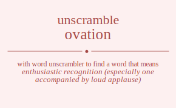

The word found after unscrambling ovation means that enthusiastic recognition (especially one accompanied by loud applause), .

The word found after unscrambling ovation means that enthusiastic recognition (especially one accompanied by loud applause), .
You can also find solutions for different combinations of letters in ovation like ovation ovatino ovatoin ovatoni ovatnio ovatnoi ovaiton ovaitno ovaiotn ovaiont ovainto ovainot ovaotin ovaotni ovaoitn ovaoint ovaonti ovaonit ovantio ovantoi ovanito ovaniot ovanoti ovanoit ovtaion ovtaino ovtaoin ovtaoni ovtanio ovtanoi ovtiaon ovtiano ovtioan ovtiona ovtinao ovtinoa ovtoain ovtoani ovtoian ovtoina ovtonai ovtonia ovtnaio ovtnaoi ovtniao ovtnioa ovtnoai ovtnoia oviaton oviatno oviaotn oviaont ovianto ovianot ovitaon ovitano ovitoan ovitona ovitnao ovitnoa ovioatn ovioant oviotan oviotna ovionat ovionta ovinato ovinaot ovintao ovintoa ovinoat ovinota ovoatin ovoatni ovoaitn ovoaint ovoanti ovoanit ovotain ovotani ovotian ovotina ovotnai ovotnia ovoiatn ovoiant ovoitan ovoitna ovoinat ovointa ovonati ovonait ovontai ovontia ovoniat ovonita ovnatio ovnatoi ovnaito ovnaiot ovnaoti ovnaoit ovntaio ovntaoi ovntiao ovntioa ovntoai ovntoia ovniato ovniaot ovnitao ovnitoa ovnioat ovniota ovnoati ovnoait ovnotai ovnotia ovnoiat ovnoita oavtion oavtino oavtoin oavtoni oavtnio oavtnoi oaviton oavitno oaviotn oaviont oavinto oavinot oavotin oavotni oavoitn oavoint oavonti oavonit oavntio oavntoi oavnito oavniot oavnoti oavnoit oatvion oatvino oatvoin oatvoni oatvnio oatvnoi oativon oativno oatiovn oationv oatinvo oatinov oatovin oatovni oatoivn oatoinv oatonvi oatoniv oatnvio oatnvoi oatnivo oatniov oatnovi oatnoiv oaivton oaivtno oaivotn oaivont oaivnto oaivnot oaitvon oaitvno oaitovn oaitonv oaitnvo oaitnov oaiovtn oaiovnt oaiotvn oaiotnv oaionvt oaiontv oainvto oainvot oaintvo oaintov oainovt oainotv oaovtin oaovtni oaovitn oaovint oaovnti oaovnit oaotvin oaotvni oaotivn oaotinv oaotnvi oaotniv oaoivtn oaoivnt oaoitvn oaoitnv oaoinvt oaointv oaonvti oaonvit oaontvi oaontiv oaonivt oaonitv oanvtio oanvtoi oanvito oanviot oanvoti oanvoit oantvio oantvoi oantivo oantiov oantovi oantoiv oanivto oanivot oanitvo oanitov oaniovt oaniotv oanovti oanovit oanotvi oanotiv oanoivt oanoitv otvaion otvaino otvaoin otvaoni otvanio otvanoi otviaon otviano otvioan otviona otvinao otvinoa otvoain otvoani otvoian otvoina otvonai otvonia otvnaio otvnaoi otvniao otvnioa otvnoai otvnoia otavion otavino otavoin otavoni otavnio otavnoi otaivon otaivno otaiovn otaionv otainvo otainov otaovin otaovni otaoivn otaoinv otaonvi otaoniv otanvio otanvoi otanivo otaniov otanovi otanoiv otivaon otivano otivoan otivona otivnao otivnoa otiavon otiavno otiaovn otiaonv otianvo otianov otiovan otiovna otioavn otioanv otionva otionav otinvao otinvoa otinavo otinaov otinova otinoav otovain otovani otovian otovina otovnai otovnia otoavin otoavni otoaivn otoainv otoanvi otoaniv otoivan otoivna otoiavn otoianv otoinva otoinav otonvai otonvia otonavi otonaiv otoniva otoniav otnvaio otnvaoi otnviao otnvioa otnvoai otnvoia otnavio otnavoi otnaivo otnaiov otnaovi otnaoiv otnivao otnivoa otniavo otniaov otniova otnioav otnovai otnovia otnoavi otnoaiv otnoiva otnoiav oivaton oivatno oivaotn oivaont oivanto oivanot oivtaon oivtano oivtoan oivtona oivtnao oivtnoa oivoatn oivoant oivotan oivotna oivonat oivonta oivnato oivnaot oivntao oivntoa oivnoat oivnota oiavton oiavtno oiavotn oiavont oiavnto oiavnot oiatvon oiatvno oiatovn oiatonv oiatnvo oiatnov oiaovtn oiaovnt oiaotvn oiaotnv oiaonvt oiaontv oianvto oianvot oiantvo oiantov oianovt oianotv oitvaon oitvano oitvoan oitvona oitvnao oitvnoa oitavon oitavno oitaovn oitaonv oitanvo oitanov oitovan oitovna oitoavn oitoanv oitonva oitonav oitnvao oitnvoa oitnavo oitnaov oitnova oitnoav oiovatn oiovant oiovtan oiovtna oiovnat oiovnta oioavtn oioavnt oioatvn oioatnv oioanvt oioantv oiotvan oiotvna oiotavn oiotanv oiotnva oiotnav oionvat oionvta oionavt oionatv oiontva oiontav oinvato oinvaot oinvtao oinvtoa oinvoat oinvota oinavto oinavot oinatvo oinatov oinaovt oinaotv ointvao ointvoa ointavo ointaov ointova ointoav oinovat oinovta oinoavt oinoatv oinotva oinotav oovatin oovatni oovaitn oovaint oovanti oovanit oovtain oovtani oovtian oovtina oovtnai oovtnia ooviatn ooviant oovitan oovitna oovinat oovinta oovnati oovnait oovntai oovntia oovniat oovnita ooavtin ooavtni ooavitn ooavint ooavnti ooavnit ooatvin ooatvni ooativn ooatinv ooatnvi ooatniv ooaivtn ooaivnt ooaitvn ooaitnv ooainvt ooaintv ooanvti ooanvit ooantvi ooantiv ooanivt ooanitv ootvain ootvani ootvian ootvina ootvnai ootvnia ootavin ootavni ootaivn ootainv ootanvi ootaniv ootivan ootivna ootiavn ootianv ootinva ootinav ootnvai ootnvia ootnavi ootnaiv ootniva ootniav ooivatn ooivant ooivtan ooivtna ooivnat ooivnta ooiavtn ooiavnt ooiatvn ooiatnv ooianvt ooiantv ooitvan ooitvna ooitavn ooitanv ooitnva ooitnav ooinvat ooinvta ooinavt ooinatv oointva oointav oonvati oonvait oonvtai oonvtia oonviat oonvita oonavti oonavit oonatvi oonativ oonaivt oonaitv oontvai oontvia oontavi oontaiv oontiva oontiav oonivat oonivta ooniavt ooniatv oonitva oonitav onvatio onvatoi onvaito onvaiot onvaoti onvaoit onvtaio onvtaoi onvtiao onvtioa onvtoai onvtoia onviato onviaot onvitao onvitoa onvioat onviota onvoati onvoait onvotai onvotia onvoiat onvoita onavtio onavtoi onavito onaviot onavoti onavoit onatvio onatvoi onativo onatiov onatovi onatoiv onaivto onaivot onaitvo onaitov onaiovt onaiotv onaovti onaovit onaotvi onaotiv onaoivt onaoitv ontvaio ontvaoi ontviao ontvioa ontvoai ontvoia ontavio ontavoi ontaivo ontaiov ontaovi ontaoiv ontivao ontivoa ontiavo ontiaov ontiova ontioav ontovai ontovia ontoavi ontoaiv ontoiva ontoiav onivato onivaot onivtao onivtoa onivoat onivota oniavto oniavot oniatvo oniatov oniaovt oniaotv onitvao onitvoa onitavo onitaov onitova onitoav oniovat oniovta onioavt onioatv oniotva oniotav onovati onovait onovtai onovtia onoviat onovita onoavti onoavit onoatvi onoativ onoaivt onoaitv onotvai onotvia onotavi onotaiv onotiva onotiav onoivat onoivta onoiavt onoiatv onoitva onoitav voation voatino voatoin voatoni voatnio voatnoi voaiton voaitno voaiotn voaiont voainto voainot voaotin voaotni voaoitn voaoint voaonti voaonit voantio voantoi voanito voaniot voanoti voanoit votaion votaino votaoin votaoni votanio votanoi votiaon votiano votioan votiona votinao votinoa votoain votoani votoian votoina votonai votonia votnaio votnaoi votniao votnioa votnoai votnoia voiaton voiatno voiaotn voiaont voianto voianot voitaon voitano voitoan voitona voitnao voitnoa voioatn voioant voiotan voiotna voionat voionta voinato voinaot vointao vointoa voinoat voinota vooatin vooatni vooaitn vooaint vooanti vooanit vootain vootani vootian vootina vootnai vootnia vooiatn vooiant vooitan vooitna vooinat voointa voonati voonait voontai voontia vooniat voonita vonatio vonatoi vonaito vonaiot vonaoti vonaoit vontaio vontaoi vontiao vontioa vontoai vontoia voniato voniaot vonitao vonitoa vonioat voniota vonoati vonoait vonotai vonotia vonoiat vonoita vaotion vaotino vaotoin vaotoni vaotnio vaotnoi vaoiton vaoitno vaoiotn vaoiont vaointo vaoinot vaootin vaootni vaooitn vaooint vaoonti vaoonit vaontio vaontoi vaonito vaoniot vaonoti vaonoit vatoion vatoino vatooin vatooni vatonio vatonoi vatioon vationo vatioon vationo vatinoo vatinoo vatooin vatooni vatoion vatoino vatonoi vatonio vatnoio vatnooi vatnioo vatnioo vatnooi vatnoio vaioton vaiotno vaiootn vaioont vaionto vaionot vaitoon vaitono vaitoon vaitono vaitnoo vaitnoo vaiootn vaioont vaioton vaiotno vaionot vaionto vainoto vainoot vaintoo vaintoo vainoot vainoto vaootin vaootni vaooitn vaooint vaoonti vaoonit vaotoin vaotoni vaotion vaotino vaotnoi vaotnio vaoiotn vaoiont vaoiton vaoitno vaoinot vaointo vaonoti vaonoit vaontoi vaontio vaoniot vaonito vanotio vanotoi vanoito vanoiot vanooti vanooit vantoio vantooi vantioo vantioo vantooi vantoio vanioto vanioot vanitoo vanitoo vanioot vanioto vanooti vanooit vanotoi vanotio vanoiot vanoito vtoaion vtoaino vtoaoin vtoaoni vtoanio vtoanoi vtoiaon vtoiano vtoioan vtoiona vtoinao vtoinoa vtooain vtooani vtooian vtooina vtoonai vtoonia vtonaio vtonaoi vtoniao vtonioa vtonoai vtonoia vtaoion vtaoino vtaooin vtaooni vtaonio vtaonoi vtaioon vtaiono vtaioon vtaiono vtainoo vtainoo vtaooin vtaooni vtaoion vtaoino vtaonoi vtaonio vtanoio vtanooi vtanioo vtanioo vtanooi vtanoio vtioaon vtioano vtiooan vtioona vtionao vtionoa vtiaoon vtiaono vtiaoon vtiaono vtianoo vtianoo vtiooan vtioona vtioaon vtioano vtionoa vtionao vtinoao vtinooa vtinaoo vtinaoo vtinooa vtinoao vtooain vtooani vtooian vtooina vtoonai vtoonia vtoaoin vtoaoni vtoaion vtoaino vtoanoi vtoanio vtoioan vtoiona vtoiaon vtoiano vtoinoa vtoinao vtonoai vtonoia vtonaoi vtonaio vtonioa vtoniao vtnoaio vtnoaoi vtnoiao vtnoioa vtnooai vtnooia vtnaoio vtnaooi vtnaioo vtnaioo vtnaooi vtnaoio vtnioao vtniooa vtniaoo vtniaoo vtniooa vtnioao vtnooai vtnooia vtnoaoi vtnoaio vtnoioa vtnoiao vioaton vioatno vioaotn vioaont vioanto vioanot viotaon viotano viotoan viotona viotnao viotnoa viooatn viooant viootan viootna vioonat vioonta vionato vionaot viontao viontoa vionoat vionota viaoton viaotno viaootn viaoont viaonto viaonot viatoon viatono viatoon viatono viatnoo viatnoo viaootn viaoont viaoton viaotno viaonot viaonto vianoto vianoot viantoo viantoo vianoot vianoto vitoaon vitoano vitooan vitoona vitonao vitonoa vitaoon vitaono vitaoon vitaono vitanoo vitanoo vitooan vitoona vitoaon vitoano vitonoa vitonao vitnoao vitnooa vitnaoo vitnaoo vitnooa vitnoao viooatn viooant viootan viootna vioonat vioonta vioaotn vioaont vioaton vioatno vioanot vioanto viotoan viotona viotaon viotano viotnoa viotnao vionoat vionota vionaot vionato viontoa viontao vinoato vinoaot vinotao vinotoa vinooat vinoota vinaoto vinaoot vinatoo vinatoo vinaoot vinaoto vintoao vintooa vintaoo vintaoo vintooa vintoao vinooat vinoota vinoaot vinoato vinotoa vinotao vooatin vooatni vooaitn vooaint vooanti vooanit vootain vootani vootian vootina vootnai vootnia vooiatn vooiant vooitan vooitna vooinat voointa voonati voonait voontai voontia vooniat voonita voaotin voaotni voaoitn voaoint voaonti voaonit voatoin voatoni voation voatino voatnoi voatnio voaiotn voaiont voaiton voaitno voainot voainto voanoti voanoit voantoi voantio voaniot voanito votoain votoani votoian votoina votonai votonia votaoin votaoni votaion votaino votanoi votanio votioan votiona votiaon votiano votinoa votinao votnoai votnoia votnaoi votnaio votnioa votniao voioatn voioant voiotan voiotna voionat voionta voiaotn voiaont voiaton voiatno voianot voianto voitoan voitona voitaon voitano voitnoa voitnao voinoat voinota voinaot voinato vointoa vointao vonoati vonoait vonotai vonotia vonoiat vonoita vonaoti vonaoit vonatoi vonatio vonaiot vonaito vontoai vontoia vontaoi vontaio vontioa vontiao vonioat voniota voniaot voniato vonitoa vonitao vnoatio vnoatoi vnoaito vnoaiot vnoaoti vnoaoit vnotaio vnotaoi vnotiao vnotioa vnotoai vnotoia vnoiato vnoiaot vnoitao vnoitoa vnoioat vnoiota vnooati vnooait vnootai vnootia vnooiat vnooita vnaotio vnaotoi vnaoito vnaoiot vnaooti vnaooit vnatoio vnatooi vnatioo vnatioo vnatooi vnatoio vnaioto vnaioot vnaitoo vnaitoo vnaioot vnaioto vnaooti vnaooit vnaotoi vnaotio vnaoiot vnaoito vntoaio vntoaoi vntoiao vntoioa vntooai vntooia vntaoio vntaooi vntaioo vntaioo vntaooi vntaoio vntioao vntiooa vntiaoo vntiaoo vntiooa vntioao vntooai vntooia vntoaoi vntoaio vntoioa vntoiao vnioato vnioaot vniotao vniotoa vniooat vnioota vniaoto vniaoot vniatoo vniatoo vniaoot vniaoto vnitoao vnitooa vnitaoo vnitaoo vnitooa vnitoao vniooat vnioota vnioaot vnioato vniotoa vniotao vnooati vnooait vnootai vnootia vnooiat vnooita vnoaoti vnoaoit vnoatoi vnoatio vnoaiot vnoaito vnotoai vnotoia vnotaoi vnotaio vnotioa vnotiao vnoioat vnoiota vnoiaot vnoiato vnoitoa vnoitao aovtion aovtino aovtoin aovtoni aovtnio aovtnoi aoviton aovitno aoviotn aoviont aovinto aovinot aovotin aovotni aovoitn aovoint aovonti aovonit aovntio aovntoi aovnito aovniot aovnoti aovnoit aotvion aotvino aotvoin aotvoni aotvnio aotvnoi aotivon aotivno aotiovn aotionv aotinvo aotinov aotovin aotovni aotoivn aotoinv aotonvi aotoniv aotnvio aotnvoi aotnivo aotniov aotnovi aotnoiv aoivton aoivtno aoivotn aoivont aoivnto aoivnot aoitvon aoitvno aoitovn aoitonv aoitnvo aoitnov aoiovtn aoiovnt aoiotvn aoiotnv aoionvt aoiontv aoinvto aoinvot aointvo aointov aoinovt aoinotv aoovtin aoovtni aoovitn aoovint aoovnti aoovnit aootvin aootvni aootivn aootinv aootnvi aootniv aooivtn aooivnt aooitvn aooitnv aooinvt aoointv aoonvti aoonvit aoontvi aoontiv aoonivt aoonitv aonvtio aonvtoi aonvito aonviot aonvoti aonvoit aontvio aontvoi aontivo aontiov aontovi aontoiv aonivto aonivot aonitvo aonitov aoniovt aoniotv aonovti aonovit aonotvi aonotiv aonoivt aonoitv avotion avotino avotoin avotoni avotnio avotnoi avoiton avoitno avoiotn avoiont avointo avoinot avootin avootni avooitn avooint avoonti avoonit avontio avontoi avonito avoniot avonoti avonoit avtoion avtoino avtooin avtooni avtonio avtonoi avtioon avtiono avtioon avtiono avtinoo avtinoo avtooin avtooni avtoion avtoino avtonoi avtonio avtnoio avtnooi avtnioo avtnioo avtnooi avtnoio avioton aviotno aviootn avioont avionto avionot avitoon avitono avitoon avitono avitnoo avitnoo aviootn avioont avioton aviotno avionot avionto avinoto avinoot avintoo avintoo avinoot avinoto avootin avootni avooitn avooint avoonti avoonit avotoin avotoni avotion avotino avotnoi avotnio avoiotn avoiont avoiton avoitno avoinot avointo avonoti avonoit avontoi avontio avoniot avonito avnotio avnotoi avnoito avnoiot avnooti avnooit avntoio avntooi avntioo avntioo avntooi avntoio avnioto avnioot avnitoo avnitoo avnioot avnioto avnooti avnooit avnotoi avnotio avnoiot avnoito atovion atovino atovoin atovoni atovnio atovnoi atoivon atoivno atoiovn atoionv atoinvo atoinov atoovin atoovni atooivn atooinv atoonvi atooniv atonvio atonvoi atonivo atoniov atonovi atonoiv atvoion atvoino atvooin atvooni atvonio atvonoi atvioon atviono atvioon atviono atvinoo atvinoo atvooin atvooni atvoion atvoino atvonoi atvonio atvnoio atvnooi atvnioo atvnioo atvnooi atvnoio atiovon atiovno atioovn atioonv ationvo ationov ativoon ativono ativoon ativono ativnoo ativnoo atioovn atioonv atiovon atiovno ationov ationvo atinovo atinoov atinvoo atinvoo atinoov atinovo atoovin atoovni atooivn atooinv atoonvi atooniv atovoin atovoni atovion atovino atovnoi atovnio atoiovn atoionv atoivon atoivno atoinov atoinvo atonovi atonoiv atonvoi atonvio atoniov atonivo atnovio atnovoi atnoivo atnoiov atnoovi atnooiv atnvoio atnvooi atnvioo atnvioo atnvooi atnvoio atniovo atnioov atnivoo atnivoo atnioov atniovo atnoovi atnooiv atnovoi atnovio atnoiov atnoivo aiovton aiovtno aiovotn aiovont aiovnto aiovnot aiotvon aiotvno aiotovn aiotonv aiotnvo aiotnov aioovtn aioovnt aiootvn aiootnv aioonvt aioontv aionvto aionvot aiontvo aiontov aionovt aionotv aivoton aivotno aivootn aivoont aivonto aivonot aivtoon aivtono aivtoon aivtono aivtnoo aivtnoo aivootn aivoont aivoton aivotno aivonot aivonto aivnoto aivnoot aivntoo aivntoo aivnoot aivnoto aitovon aitovno aitoovn aitoonv aitonvo aitonov aitvoon aitvono aitvoon aitvono aitvnoo aitvnoo aitoovn aitoonv aitovon aitovno aitonov aitonvo aitnovo aitnoov aitnvoo aitnvoo aitnoov aitnovo aioovtn aioovnt aiootvn aiootnv aioonvt aioontv aiovotn aiovont aiovton aiovtno aiovnot aiovnto aiotovn aiotonv aiotvon aiotvno aiotnov aiotnvo aionovt aionotv aionvot aionvto aiontov aiontvo ainovto ainovot ainotvo ainotov ainoovt ainootv ainvoto ainvoot ainvtoo ainvtoo ainvoot ainvoto aintovo aintoov aintvoo aintvoo aintoov aintovo ainoovt ainootv ainovot ainovto ainotov ainotvo aoovtin aoovtni aoovitn aoovint aoovnti aoovnit aootvin aootvni aootivn aootinv aootnvi aootniv aooivtn aooivnt aooitvn aooitnv aooinvt aoointv aoonvti aoonvit aoontvi aoontiv aoonivt aoonitv aovotin aovotni aovoitn aovoint aovonti aovonit aovtoin aovtoni aovtion aovtino aovtnoi aovtnio aoviotn aoviont aoviton aovitno aovinot aovinto aovnoti aovnoit aovntoi aovntio aovniot aovnito aotovin aotovni aotoivn aotoinv aotonvi aotoniv aotvoin aotvoni aotvion aotvino aotvnoi aotvnio aotiovn aotionv aotivon aotivno aotinov aotinvo aotnovi aotnoiv aotnvoi aotnvio aotniov aotnivo aoiovtn aoiovnt aoiotvn aoiotnv aoionvt aoiontv aoivotn aoivont aoivton aoivtno aoivnot aoivnto aoitovn aoitonv aoitvon aoitvno aoitnov aoitnvo aoinovt aoinotv aoinvot aoinvto aointov aointvo aonovti aonovit aonotvi aonotiv aonoivt aonoitv aonvoti aonvoit aonvtoi aonvtio aonviot aonvito aontovi aontoiv aontvoi aontvio aontiov aontivo aoniovt aoniotv aonivot aonivto aonitov aonitvo anovtio anovtoi anovito anoviot anovoti anovoit anotvio anotvoi anotivo anotiov anotovi anotoiv anoivto anoivot anoitvo anoitov anoiovt anoiotv anoovti anoovit anootvi anootiv anooivt anooitv anvotio anvotoi anvoito anvoiot anvooti anvooit anvtoio anvtooi anvtioo anvtioo anvtooi anvtoio anvioto anvioot anvitoo anvitoo anvioot anvioto anvooti anvooit anvotoi anvotio anvoiot anvoito antovio antovoi antoivo antoiov antoovi antooiv antvoio antvooi antvioo antvioo antvooi antvoio antiovo antioov antivoo antivoo antioov antiovo antoovi antooiv antovoi antovio antoiov antoivo aniovto aniovot aniotvo aniotov anioovt aniootv anivoto anivoot anivtoo anivtoo anivoot anivoto anitovo anitoov anitvoo anitvoo anitoov anitovo anioovt aniootv aniovot aniovto aniotov aniotvo anoovti anoovit anootvi anootiv anooivt anooitv anovoti anovoit anovtoi anovtio anoviot anovito anotovi anotoiv anotvoi anotvio anotiov anotivo anoiovt anoiotv anoivot anoivto anoitov anoitvo tovaion tovaino tovaoin tovaoni tovanio tovanoi toviaon toviano tovioan toviona tovinao tovinoa tovoain tovoani tovoian tovoina tovonai tovonia tovnaio tovnaoi tovniao tovnioa tovnoai tovnoia toavion toavino toavoin toavoni toavnio toavnoi toaivon toaivno toaiovn toaionv toainvo toainov toaovin toaovni toaoivn toaoinv toaonvi toaoniv toanvio toanvoi toanivo toaniov toanovi toanoiv toivaon toivano toivoan toivona toivnao toivnoa toiavon toiavno toiaovn toiaonv toianvo toianov toiovan toiovna toioavn toioanv toionva toionav toinvao toinvoa toinavo toinaov toinova toinoav toovain toovani toovian toovina toovnai toovnia tooavin tooavni tooaivn tooainv tooanvi tooaniv tooivan tooivna tooiavn tooianv tooinva tooinav toonvai toonvia toonavi toonaiv tooniva tooniav tonvaio tonvaoi tonviao tonvioa tonvoai tonvoia tonavio tonavoi tonaivo tonaiov tonaovi tonaoiv tonivao tonivoa toniavo toniaov toniova tonioav tonovai tonovia tonoavi tonoaiv tonoiva tonoiav tvoaion tvoaino tvoaoin tvoaoni tvoanio tvoanoi tvoiaon tvoiano tvoioan tvoiona tvoinao tvoinoa tvooain tvooani tvooian tvooina tvoonai tvoonia tvonaio tvonaoi tvoniao tvonioa tvonoai tvonoia tvaoion tvaoino tvaooin tvaooni tvaonio tvaonoi tvaioon tvaiono tvaioon tvaiono tvainoo tvainoo tvaooin tvaooni tvaoion tvaoino tvaonoi tvaonio tvanoio tvanooi tvanioo tvanioo tvanooi tvanoio tvioaon tvioano tviooan tvioona tvionao tvionoa tviaoon tviaono tviaoon tviaono tvianoo tvianoo tviooan tvioona tvioaon tvioano tvionoa tvionao tvinoao tvinooa tvinaoo tvinaoo tvinooa tvinoao tvooain tvooani tvooian tvooina tvoonai tvoonia tvoaoin tvoaoni tvoaion tvoaino tvoanoi tvoanio tvoioan tvoiona tvoiaon tvoiano tvoinoa tvoinao tvonoai tvonoia tvonaoi tvonaio tvonioa tvoniao tvnoaio tvnoaoi tvnoiao tvnoioa tvnooai tvnooia tvnaoio tvnaooi tvnaioo tvnaioo tvnaooi tvnaoio tvnioao tvniooa tvniaoo tvniaoo tvniooa tvnioao tvnooai tvnooia tvnoaoi tvnoaio tvnoioa tvnoiao taovion taovino taovoin taovoni taovnio taovnoi taoivon taoivno taoiovn taoionv taoinvo taoinov taoovin taoovni taooivn taooinv taoonvi taooniv taonvio taonvoi taonivo taoniov taonovi taonoiv tavoion tavoino tavooin tavooni tavonio tavonoi tavioon taviono tavioon taviono tavinoo tavinoo tavooin tavooni tavoion tavoino tavonoi tavonio tavnoio tavnooi tavnioo tavnioo tavnooi tavnoio taiovon taiovno taioovn taioonv taionvo taionov taivoon taivono taivoon taivono taivnoo taivnoo taioovn taioonv taiovon taiovno taionov taionvo tainovo tainoov tainvoo tainvoo tainoov tainovo taoovin taoovni taooivn taooinv taoonvi taooniv taovoin taovoni taovion taovino taovnoi taovnio taoiovn taoionv taoivon taoivno taoinov taoinvo taonovi taonoiv taonvoi taonvio taoniov taonivo tanovio tanovoi tanoivo tanoiov tanoovi tanooiv tanvoio tanvooi tanvioo tanvioo tanvooi tanvoio taniovo tanioov tanivoo tanivoo tanioov taniovo tanoovi tanooiv tanovoi tanovio tanoiov tanoivo tiovaon tiovano tiovoan tiovona tiovnao tiovnoa tioavon tioavno tioaovn tioaonv tioanvo tioanov tioovan tioovna tiooavn tiooanv tioonva tioonav tionvao tionvoa tionavo tionaov tionova tionoav tivoaon tivoano tivooan tivoona tivonao tivonoa tivaoon tivaono tivaoon tivaono tivanoo tivanoo tivooan tivoona tivoaon tivoano tivonoa tivonao tivnoao tivnooa tivnaoo tivnaoo tivnooa tivnoao tiaovon tiaovno tiaoovn tiaoonv tiaonvo tiaonov tiavoon tiavono tiavoon tiavono tiavnoo tiavnoo tiaoovn tiaoonv tiaovon tiaovno tiaonov tiaonvo tianovo tianoov tianvoo tianvoo tianoov tianovo tioovan tioovna tiooavn tiooanv tioonva tioonav tiovoan tiovona tiovaon tiovano tiovnoa tiovnao tioaovn tioaonv tioavon tioavno tioanov tioanvo tionova tionoav tionvoa tionvao tionaov tionavo tinovao tinovoa tinoavo tinoaov tinoova tinooav tinvoao tinvooa tinvaoo tinvaoo tinvooa tinvoao tinaovo tinaoov tinavoo tinavoo tinaoov tinaovo tinoova tinooav tinovoa tinovao tinoaov tinoavo toovain toovani toovian toovina toovnai toovnia tooavin tooavni tooaivn tooainv tooanvi tooaniv tooivan tooivna tooiavn tooianv tooinva tooinav toonvai toonvia toonavi toonaiv tooniva tooniav tovoain tovoani tovoian tovoina tovonai tovonia tovaoin tovaoni tovaion tovaino tovanoi tovanio tovioan toviona toviaon toviano tovinoa tovinao tovnoai tovnoia tovnaoi tovnaio tovnioa tovniao toaovin toaovni toaoivn toaoinv toaonvi toaoniv toavoin toavoni toavion toavino toavnoi toavnio toaiovn toaionv toaivon toaivno toainov toainvo toanovi toanoiv toanvoi toanvio toaniov toanivo toiovan toiovna toioavn toioanv toionva toionav toivoan toivona toivaon toivano toivnoa toivnao toiaovn toiaonv toiavon toiavno toianov toianvo toinova toinoav toinvoa toinvao toinaov toinavo tonovai tonovia tonoavi tonoaiv tonoiva tonoiav tonvoai tonvoia tonvaoi tonvaio tonvioa tonviao tonaovi tonaoiv tonavoi tonavio tonaiov tonaivo toniova tonioav tonivoa tonivao toniaov toniavo tnovaio tnovaoi tnoviao tnovioa tnovoai tnovoia tnoavio tnoavoi tnoaivo tnoaiov tnoaovi tnoaoiv tnoivao tnoivoa tnoiavo tnoiaov tnoiova tnoioav tnoovai tnoovia tnooavi tnooaiv tnooiva tnooiav tnvoaio tnvoaoi tnvoiao tnvoioa tnvooai tnvooia tnvaoio tnvaooi tnvaioo tnvaioo tnvaooi tnvaoio tnvioao tnviooa tnviaoo tnviaoo tnviooa tnvioao tnvooai tnvooia tnvoaoi tnvoaio tnvoioa tnvoiao tnaovio tnaovoi tnaoivo tnaoiov tnaoovi tnaooiv tnavoio tnavooi tnavioo tnavioo tnavooi tnavoio tnaiovo tnaioov tnaivoo tnaivoo tnaioov tnaiovo tnaoovi tnaooiv tnaovoi tnaovio tnaoiov tnaoivo tniovao tniovoa tnioavo tnioaov tnioova tniooav tnivoao tnivooa tnivaoo tnivaoo tnivooa tnivoao tniaovo tniaoov tniavoo tniavoo tniaoov tniaovo tnioova tniooav tniovoa tniovao tnioaov tnioavo tnoovai tnoovia tnooavi tnooaiv tnooiva tnooiav tnovoai tnovoia tnovaoi tnovaio tnovioa tnoviao tnoaovi tnoaoiv tnoavoi tnoavio tnoaiov tnoaivo tnoiova tnoioav tnoivoa tnoivao tnoiaov tnoiavo iovaton iovatno iovaotn iovaont iovanto iovanot iovtaon iovtano iovtoan iovtona iovtnao iovtnoa iovoatn iovoant iovotan iovotna iovonat iovonta iovnato iovnaot iovntao iovntoa iovnoat iovnota ioavton ioavtno ioavotn ioavont ioavnto ioavnot ioatvon ioatvno ioatovn ioatonv ioatnvo ioatnov ioaovtn ioaovnt ioaotvn ioaotnv ioaonvt ioaontv ioanvto ioanvot ioantvo ioantov ioanovt ioanotv iotvaon iotvano iotvoan iotvona iotvnao iotvnoa iotavon iotavno iotaovn iotaonv iotanvo iotanov iotovan iotovna iotoavn iotoanv iotonva iotonav iotnvao iotnvoa iotnavo iotnaov iotnova iotnoav ioovatn ioovant ioovtan ioovtna ioovnat ioovnta iooavtn iooavnt iooatvn iooatnv iooanvt iooantv iootvan iootvna iootavn iootanv iootnva iootnav ioonvat ioonvta ioonavt ioonatv ioontva ioontav ionvato ionvaot ionvtao ionvtoa ionvoat ionvota ionavto ionavot ionatvo ionatov ionaovt ionaotv iontvao iontvoa iontavo iontaov iontova iontoav ionovat ionovta ionoavt ionoatv ionotva ionotav ivoaton ivoatno ivoaotn ivoaont ivoanto ivoanot ivotaon ivotano ivotoan ivotona ivotnao ivotnoa ivooatn ivooant ivootan ivootna ivoonat ivoonta ivonato ivonaot ivontao ivontoa ivonoat ivonota ivaoton ivaotno ivaootn ivaoont ivaonto ivaonot ivatoon ivatono ivatoon ivatono ivatnoo ivatnoo ivaootn ivaoont ivaoton ivaotno ivaonot ivaonto ivanoto ivanoot ivantoo ivantoo ivanoot ivanoto ivtoaon ivtoano ivtooan ivtoona ivtonao ivtonoa ivtaoon ivtaono ivtaoon ivtaono ivtanoo ivtanoo ivtooan ivtoona ivtoaon ivtoano ivtonoa ivtonao ivtnoao ivtnooa ivtnaoo ivtnaoo ivtnooa ivtnoao ivooatn ivooant ivootan ivootna ivoonat ivoonta ivoaotn ivoaont ivoaton ivoatno ivoanot ivoanto ivotoan ivotona ivotaon ivotano ivotnoa ivotnao ivonoat ivonota ivonaot ivonato ivontoa ivontao ivnoato ivnoaot ivnotao ivnotoa ivnooat ivnoota ivnaoto ivnaoot ivnatoo ivnatoo ivnaoot ivnaoto ivntoao ivntooa ivntaoo ivntaoo ivntooa ivntoao ivnooat ivnoota ivnoaot ivnoato ivnotoa ivnotao iaovton iaovtno iaovotn iaovont iaovnto iaovnot iaotvon iaotvno iaotovn iaotonv iaotnvo iaotnov iaoovtn iaoovnt iaootvn iaootnv iaoonvt iaoontv iaonvto iaonvot iaontvo iaontov iaonovt iaonotv iavoton iavotno iavootn iavoont iavonto iavonot iavtoon iavtono iavtoon iavtono iavtnoo iavtnoo iavootn iavoont iavoton iavotno iavonot iavonto iavnoto iavnoot iavntoo iavntoo iavnoot iavnoto iatovon iatovno iatoovn iatoonv iatonvo iatonov iatvoon iatvono iatvoon iatvono iatvnoo iatvnoo iatoovn iatoonv iatovon iatovno iatonov iatonvo iatnovo iatnoov iatnvoo iatnvoo iatnoov iatnovo iaoovtn iaoovnt iaootvn iaootnv iaoonvt iaoontv iaovotn iaovont iaovton iaovtno iaovnot iaovnto iaotovn iaotonv iaotvon iaotvno iaotnov iaotnvo iaonovt iaonotv iaonvot iaonvto iaontov iaontvo ianovto ianovot ianotvo ianotov ianoovt ianootv ianvoto ianvoot ianvtoo ianvtoo ianvoot ianvoto iantovo iantoov iantvoo iantvoo iantoov iantovo ianoovt ianootv ianovot ianovto ianotov ianotvo itovaon itovano itovoan itovona itovnao itovnoa itoavon itoavno itoaovn itoaonv itoanvo itoanov itoovan itoovna itooavn itooanv itoonva itoonav itonvao itonvoa itonavo itonaov itonova itonoav itvoaon itvoano itvooan itvoona itvonao itvonoa itvaoon itvaono itvaoon itvaono itvanoo itvanoo itvooan itvoona itvoaon itvoano itvonoa itvonao itvnoao itvnooa itvnaoo itvnaoo itvnooa itvnoao itaovon itaovno itaoovn itaoonv itaonvo itaonov itavoon itavono itavoon itavono itavnoo itavnoo itaoovn itaoonv itaovon itaovno itaonov itaonvo itanovo itanoov itanvoo itanvoo itanoov itanovo itoovan itoovna itooavn itooanv itoonva itoonav itovoan itovona itovaon itovano itovnoa itovnao itoaovn itoaonv itoavon itoavno itoanov itoanvo itonova itonoav itonvoa itonvao itonaov itonavo itnovao itnovoa itnoavo itnoaov itnoova itnooav itnvoao itnvooa itnvaoo itnvaoo itnvooa itnvoao itnaovo itnaoov itnavoo itnavoo itnaoov itnaovo itnoova itnooav itnovoa itnovao itnoaov itnoavo ioovatn ioovant ioovtan ioovtna ioovnat ioovnta iooavtn iooavnt iooatvn iooatnv iooanvt iooantv iootvan iootvna iootavn iootanv iootnva iootnav ioonvat ioonvta ioonavt ioonatv ioontva ioontav iovoatn iovoant iovotan iovotna iovonat iovonta iovaotn iovaont iovaton iovatno iovanot iovanto iovtoan iovtona iovtaon iovtano iovtnoa iovtnao iovnoat iovnota iovnaot iovnato iovntoa iovntao ioaovtn ioaovnt ioaotvn ioaotnv ioaonvt ioaontv ioavotn ioavont ioavton ioavtno ioavnot ioavnto ioatovn ioatonv ioatvon ioatvno ioatnov ioatnvo ioanovt ioanotv ioanvot ioanvto ioantov ioantvo iotovan iotovna iotoavn iotoanv iotonva iotonav iotvoan iotvona iotvaon iotvano iotvnoa iotvnao iotaovn iotaonv iotavon iotavno iotanov iotanvo iotnova iotnoav iotnvoa iotnvao iotnaov iotnavo ionovat ionovta ionoavt ionoatv ionotva ionotav ionvoat ionvota ionvaot ionvato ionvtoa ionvtao ionaovt ionaotv ionavot ionavto ionatov ionatvo iontova iontoav iontvoa iontvao iontaov iontavo inovato inovaot inovtao inovtoa inovoat inovota inoavto inoavot inoatvo inoatov inoaovt inoaotv inotvao inotvoa inotavo inotaov inotova inotoav inoovat inoovta inooavt inooatv inootva inootav invoato invoaot invotao invotoa invooat invoota invaoto invaoot invatoo invatoo invaoot invaoto invtoao invtooa invtaoo invtaoo invtooa invtoao invooat invoota invoaot invoato invotoa invotao inaovto inaovot inaotvo inaotov inaoovt inaootv inavoto inavoot inavtoo inavtoo inavoot inavoto inatovo inatoov inatvoo inatvoo inatoov inatovo inaoovt inaootv inaovot inaovto inaotov inaotvo intovao intovoa intoavo intoaov intoova intooav intvoao intvooa intvaoo intvaoo intvooa intvoao intaovo intaoov intavoo intavoo intaoov intaovo intoova intooav intovoa intovao intoaov intoavo inoovat inoovta inooavt inooatv inootva inootav inovoat inovota inovaot inovato inovtoa inovtao inoaovt inoaotv inoavot inoavto inoatov inoatvo inotova inotoav inotvoa inotvao inotaov inotavo oovatin oovatni oovaitn oovaint oovanti oovanit oovtain oovtani oovtian oovtina oovtnai oovtnia ooviatn ooviant oovitan oovitna oovinat oovinta oovnati oovnait oovntai oovntia oovniat oovnita ooavtin ooavtni ooavitn ooavint ooavnti ooavnit ooatvin ooatvni ooativn ooatinv ooatnvi ooatniv ooaivtn ooaivnt ooaitvn ooaitnv ooainvt ooaintv ooanvti ooanvit ooantvi ooantiv ooanivt ooanitv ootvain ootvani ootvian ootvina ootvnai ootvnia ootavin ootavni ootaivn ootainv ootanvi ootaniv ootivan ootivna ootiavn ootianv ootinva ootinav ootnvai ootnvia ootnavi ootnaiv ootniva ootniav ooivatn ooivant ooivtan ooivtna ooivnat ooivnta ooiavtn ooiavnt ooiatvn ooiatnv ooianvt ooiantv ooitvan ooitvna ooitavn ooitanv ooitnva ooitnav ooinvat ooinvta ooinavt ooinatv oointva oointav oonvati oonvait oonvtai oonvtia oonviat oonvita oonavti oonavit oonatvi oonativ oonaivt oonaitv oontvai oontvia oontavi oontaiv oontiva oontiav oonivat oonivta ooniavt ooniatv oonitva oonitav ovoatin ovoatni ovoaitn ovoaint ovoanti ovoanit ovotain ovotani ovotian ovotina ovotnai ovotnia ovoiatn ovoiant ovoitan ovoitna ovoinat ovointa ovonati ovonait ovontai ovontia ovoniat ovonita ovaotin ovaotni ovaoitn ovaoint ovaonti ovaonit ovatoin ovatoni ovation ovatino ovatnoi ovatnio ovaiotn ovaiont ovaiton ovaitno ovainot ovainto ovanoti ovanoit ovantoi ovantio ovaniot ovanito ovtoain ovtoani ovtoian ovtoina ovtonai ovtonia ovtaoin ovtaoni ovtaion ovtaino ovtanoi ovtanio ovtioan ovtiona ovtiaon ovtiano ovtinoa ovtinao ovtnoai ovtnoia ovtnaoi ovtnaio ovtnioa ovtniao ovioatn ovioant oviotan oviotna ovionat ovionta oviaotn oviaont oviaton oviatno ovianot ovianto ovitoan ovitona ovitaon ovitano ovitnoa ovitnao ovinoat ovinota ovinaot ovinato ovintoa ovintao ovnoati ovnoait ovnotai ovnotia ovnoiat ovnoita ovnaoti ovnaoit ovnatoi ovnatio ovnaiot ovnaito ovntoai ovntoia ovntaoi ovntaio ovntioa ovntiao ovnioat ovniota ovniaot ovniato ovnitoa ovnitao oaovtin oaovtni oaovitn oaovint oaovnti oaovnit oaotvin oaotvni oaotivn oaotinv oaotnvi oaotniv oaoivtn oaoivnt oaoitvn oaoitnv oaoinvt oaointv oaonvti oaonvit oaontvi oaontiv oaonivt oaonitv oavotin oavotni oavoitn oavoint oavonti oavonit oavtoin oavtoni oavtion oavtino oavtnoi oavtnio oaviotn oaviont oaviton oavitno oavinot oavinto oavnoti oavnoit oavntoi oavntio oavniot oavnito oatovin oatovni oatoivn oatoinv oatonvi oatoniv oatvoin oatvoni oatvion oatvino oatvnoi oatvnio oatiovn oationv oativon oativno oatinov oatinvo oatnovi oatnoiv oatnvoi oatnvio oatniov oatnivo oaiovtn oaiovnt oaiotvn oaiotnv oaionvt oaiontv oaivotn oaivont oaivton oaivtno oaivnot oaivnto oaitovn oaitonv oaitvon oaitvno oaitnov oaitnvo oainovt oainotv oainvot oainvto oaintov oaintvo oanovti oanovit oanotvi oanotiv oanoivt oanoitv oanvoti oanvoit oanvtoi oanvtio oanviot oanvito oantovi oantoiv oantvoi oantvio oantiov oantivo oaniovt oaniotv oanivot oanivto oanitov oanitvo otovain otovani otovian otovina otovnai otovnia otoavin otoavni otoaivn otoainv otoanvi otoaniv otoivan otoivna otoiavn otoianv otoinva otoinav otonvai otonvia otonavi otonaiv otoniva otoniav otvoain otvoani otvoian otvoina otvonai otvonia otvaoin otvaoni otvaion otvaino otvanoi otvanio otvioan otviona otviaon otviano otvinoa otvinao otvnoai otvnoia otvnaoi otvnaio otvnioa otvniao otaovin otaovni otaoivn otaoinv otaonvi otaoniv otavoin otavoni otavion otavino otavnoi otavnio otaiovn otaionv otaivon otaivno otainov otainvo otanovi otanoiv otanvoi otanvio otaniov otanivo otiovan otiovna otioavn otioanv otionva otionav otivoan otivona otivaon otivano otivnoa otivnao otiaovn otiaonv otiavon otiavno otianov otianvo otinova otinoav otinvoa otinvao otinaov otinavo otnovai otnovia otnoavi otnoaiv otnoiva otnoiav otnvoai otnvoia otnvaoi otnvaio otnvioa otnviao otnaovi otnaoiv otnavoi otnavio otnaiov otnaivo otniova otnioav otnivoa otnivao otniaov otniavo oiovatn oiovant oiovtan oiovtna oiovnat oiovnta oioavtn oioavnt oioatvn oioatnv oioanvt oioantv oiotvan oiotvna oiotavn oiotanv oiotnva oiotnav oionvat oionvta oionavt oionatv oiontva oiontav oivoatn oivoant oivotan oivotna oivonat oivonta oivaotn oivaont oivaton oivatno oivanot oivanto oivtoan oivtona oivtaon oivtano oivtnoa oivtnao oivnoat oivnota oivnaot oivnato oivntoa oivntao oiaovtn oiaovnt oiaotvn oiaotnv oiaonvt oiaontv oiavotn oiavont oiavton oiavtno oiavnot oiavnto oiatovn oiatonv oiatvon oiatvno oiatnov oiatnvo oianovt oianotv oianvot oianvto oiantov oiantvo oitovan oitovna oitoavn oitoanv oitonva oitonav oitvoan oitvona oitvaon oitvano oitvnoa oitvnao oitaovn oitaonv oitavon oitavno oitanov oitanvo oitnova oitnoav oitnvoa oitnvao oitnaov oitnavo oinovat oinovta oinoavt oinoatv oinotva oinotav oinvoat oinvota oinvaot oinvato oinvtoa oinvtao oinaovt oinaotv oinavot oinavto oinatov oinatvo ointova ointoav ointvoa ointvao ointaov ointavo onovati onovait onovtai onovtia onoviat onovita onoavti onoavit onoatvi onoativ onoaivt onoaitv onotvai onotvia onotavi onotaiv onotiva onotiav onoivat onoivta onoiavt onoiatv onoitva onoitav onvoati onvoait onvotai onvotia onvoiat onvoita onvaoti onvaoit onvatoi onvatio onvaiot onvaito onvtoai onvtoia onvtaoi onvtaio onvtioa onvtiao onvioat onviota onviaot onviato onvitoa onvitao onaovti onaovit onaotvi onaotiv onaoivt onaoitv onavoti onavoit onavtoi onavtio onaviot onavito onatovi onatoiv onatvoi onatvio onatiov onativo onaiovt onaiotv onaivot onaivto onaitov onaitvo ontovai ontovia ontoavi ontoaiv ontoiva ontoiav ontvoai ontvoia ontvaoi ontvaio ontvioa ontviao ontaovi ontaoiv ontavoi ontavio ontaiov ontaivo ontiova ontioav ontivoa ontivao ontiaov ontiavo oniovat oniovta onioavt onioatv oniotva oniotav onivoat onivota onivaot onivato onivtoa onivtao oniaovt oniaotv oniavot oniavto oniatov oniatvo onitova onitoav onitvoa onitvao onitaov onitavo novatio novatoi novaito novaiot novaoti novaoit novtaio novtaoi novtiao novtioa novtoai novtoia noviato noviaot novitao novitoa novioat noviota novoati novoait novotai novotia novoiat novoita noavtio noavtoi noavito noaviot noavoti noavoit noatvio noatvoi noativo noatiov noatovi noatoiv noaivto noaivot noaitvo noaitov noaiovt noaiotv noaovti noaovit noaotvi noaotiv noaoivt noaoitv notvaio notvaoi notviao notvioa notvoai notvoia notavio notavoi notaivo notaiov notaovi notaoiv notivao notivoa notiavo notiaov notiova notioav notovai notovia notoavi notoaiv notoiva notoiav noivato noivaot noivtao noivtoa noivoat noivota noiavto noiavot noiatvo noiatov noiaovt noiaotv noitvao noitvoa noitavo noitaov noitova noitoav noiovat noiovta noioavt noioatv noiotva noiotav noovati noovait noovtai noovtia nooviat noovita nooavti nooavit nooatvi nooativ nooaivt nooaitv nootvai nootvia nootavi nootaiv nootiva nootiav nooivat nooivta nooiavt nooiatv nooitva nooitav nvoatio nvoatoi nvoaito nvoaiot nvoaoti nvoaoit nvotaio nvotaoi nvotiao nvotioa nvotoai nvotoia nvoiato nvoiaot nvoitao nvoitoa nvoioat nvoiota nvooati nvooait nvootai nvootia nvooiat nvooita nvaotio nvaotoi nvaoito nvaoiot nvaooti nvaooit nvatoio nvatooi nvatioo nvatioo nvatooi nvatoio nvaioto nvaioot nvaitoo nvaitoo nvaioot nvaioto nvaooti nvaooit nvaotoi nvaotio nvaoiot nvaoito nvtoaio nvtoaoi nvtoiao nvtoioa nvtooai nvtooia nvtaoio nvtaooi nvtaioo nvtaioo nvtaooi nvtaoio nvtioao nvtiooa nvtiaoo nvtiaoo nvtiooa nvtioao nvtooai nvtooia nvtoaoi nvtoaio nvtoioa nvtoiao nvioato nvioaot nviotao nviotoa nviooat nvioota nviaoto nviaoot nviatoo nviatoo nviaoot nviaoto nvitoao nvitooa nvitaoo nvitaoo nvitooa nvitoao nviooat nvioota nvioaot nvioato nviotoa nviotao nvooati nvooait nvootai nvootia nvooiat nvooita nvoaoti nvoaoit nvoatoi nvoatio nvoaiot nvoaito nvotoai nvotoia nvotaoi nvotaio nvotioa nvotiao nvoioat nvoiota nvoiaot nvoiato nvoitoa nvoitao naovtio naovtoi naovito naoviot naovoti naovoit naotvio naotvoi naotivo naotiov naotovi naotoiv naoivto naoivot naoitvo naoitov naoiovt naoiotv naoovti naoovit naootvi naootiv naooivt naooitv navotio navotoi navoito navoiot navooti navooit navtoio navtooi navtioo navtioo navtooi navtoio navioto navioot navitoo navitoo navioot navioto navooti navooit navotoi navotio navoiot navoito natovio natovoi natoivo natoiov natoovi natooiv natvoio natvooi natvioo natvioo natvooi natvoio natiovo natioov nativoo nativoo natioov natiovo natoovi natooiv natovoi natovio natoiov natoivo naiovto naiovot naiotvo naiotov naioovt naiootv naivoto naivoot naivtoo naivtoo naivoot naivoto naitovo naitoov naitvoo naitvoo naitoov naitovo naioovt naiootv naiovot naiovto naiotov naiotvo naoovti naoovit naootvi naootiv naooivt naooitv naovoti naovoit naovtoi naovtio naoviot naovito naotovi naotoiv naotvoi naotvio naotiov naotivo naoiovt naoiotv naoivot naoivto naoitov naoitvo ntovaio ntovaoi ntoviao ntovioa ntovoai ntovoia ntoavio ntoavoi ntoaivo ntoaiov ntoaovi ntoaoiv ntoivao ntoivoa ntoiavo ntoiaov ntoiova ntoioav ntoovai ntoovia ntooavi ntooaiv ntooiva ntooiav ntvoaio ntvoaoi ntvoiao ntvoioa ntvooai ntvooia ntvaoio ntvaooi ntvaioo ntvaioo ntvaooi ntvaoio ntvioao ntviooa ntviaoo ntviaoo ntviooa ntvioao ntvooai ntvooia ntvoaoi ntvoaio ntvoioa ntvoiao ntaovio ntaovoi ntaoivo ntaoiov ntaoovi ntaooiv ntavoio ntavooi ntavioo ntavioo ntavooi ntavoio ntaiovo ntaioov ntaivoo ntaivoo ntaioov ntaiovo ntaoovi ntaooiv ntaovoi ntaovio ntaoiov ntaoivo ntiovao ntiovoa ntioavo ntioaov ntioova ntiooav ntivoao ntivooa ntivaoo ntivaoo ntivooa ntivoao ntiaovo ntiaoov ntiavoo ntiavoo ntiaoov ntiaovo ntioova ntiooav ntiovoa ntiovao ntioaov ntioavo ntoovai ntoovia ntooavi ntooaiv ntooiva ntooiav ntovoai ntovoia ntovaoi ntovaio ntovioa ntoviao ntoaovi ntoaoiv ntoavoi ntoavio ntoaiov ntoaivo ntoiova ntoioav ntoivoa ntoivao ntoiaov ntoiavo niovato niovaot niovtao niovtoa niovoat niovota nioavto nioavot nioatvo nioatov nioaovt nioaotv niotvao niotvoa niotavo niotaov niotova niotoav nioovat nioovta niooavt niooatv niootva niootav nivoato nivoaot nivotao nivotoa nivooat nivoota nivaoto nivaoot nivatoo nivatoo nivaoot nivaoto nivtoao nivtooa nivtaoo nivtaoo nivtooa nivtoao nivooat nivoota nivoaot nivoato nivotoa nivotao niaovto niaovot niaotvo niaotov niaoovt niaootv niavoto niavoot niavtoo niavtoo niavoot niavoto niatovo niatoov niatvoo niatvoo niatoov niatovo niaoovt niaootv niaovot niaovto niaotov niaotvo nitovao nitovoa nitoavo nitoaov nitoova nitooav nitvoao nitvooa nitvaoo nitvaoo nitvooa nitvoao nitaovo nitaoov nitavoo nitavoo nitaoov nitaovo nitoova nitooav nitovoa nitovao nitoaov nitoavo nioovat nioovta niooavt niooatv niootva niootav niovoat niovota niovaot niovato niovtoa niovtao nioaovt nioaotv nioavot nioavto nioatov nioatvo niotova niotoav niotvoa niotvao niotaov niotavo noovati noovait noovtai noovtia nooviat noovita nooavti nooavit nooatvi nooativ nooaivt nooaitv nootvai nootvia nootavi nootaiv nootiva nootiav nooivat nooivta nooiavt nooiatv nooitva nooitav novoati novoait novotai novotia novoiat novoita novaoti novaoit novatoi novatio novaiot novaito novtoai novtoia novtaoi novtaio novtioa novtiao novioat noviota noviaot noviato novitoa novitao noaovti noaovit noaotvi noaotiv noaoivt noaoitv noavoti noavoit noavtoi noavtio noaviot noavito noatovi noatoiv noatvoi noatvio noatiov noativo noaiovt noaiotv noaivot noaivto noaitov noaitvo notovai notovia notoavi notoaiv notoiva notoiav notvoai notvoia notvaoi notvaio notvioa notviao notaovi notaoiv notavoi notavio notaiov notaivo notiova notioav notivoa notivao notiaov notiavo noiovat noiovta noioavt noioatv noiotva noiotav noivoat noivota noivaot noivato noivtoa noivtao noiaovt noiaotv noiavot noiavto noiatov noiatvo noitova noitoav noitvoa noitvao noitaov noitavo.
Unscramble Words is registered trademark.